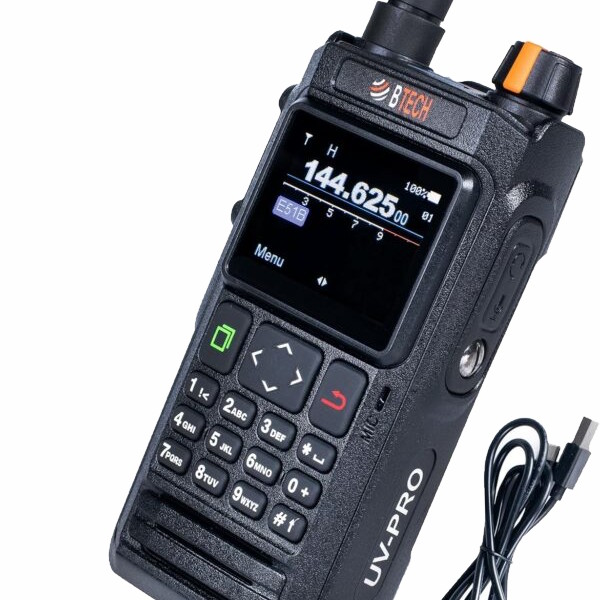
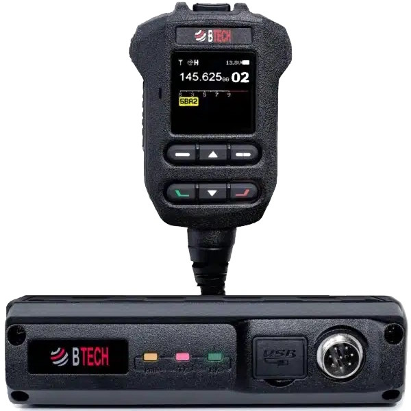
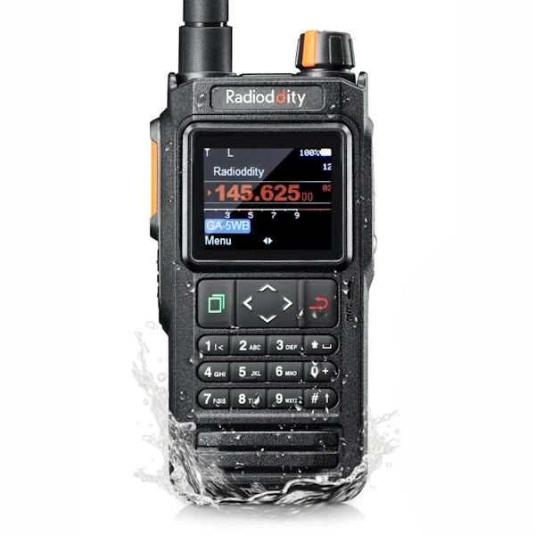
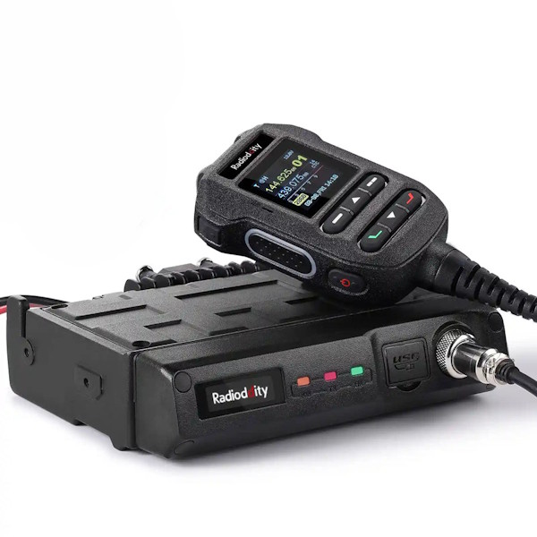
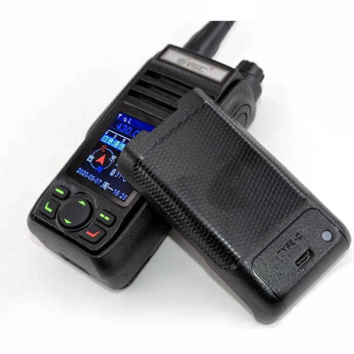
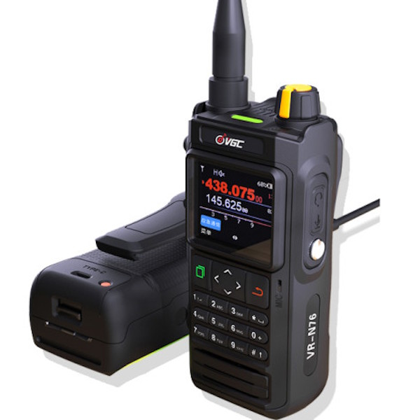
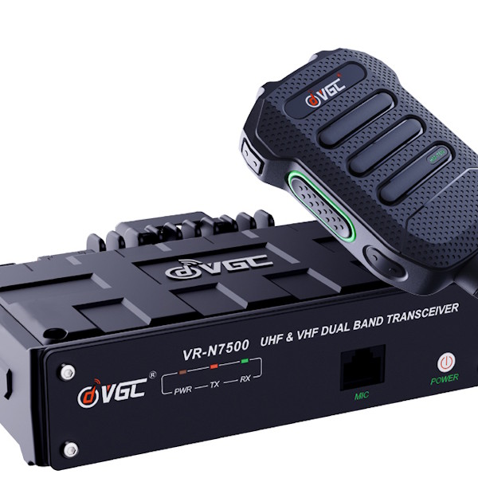
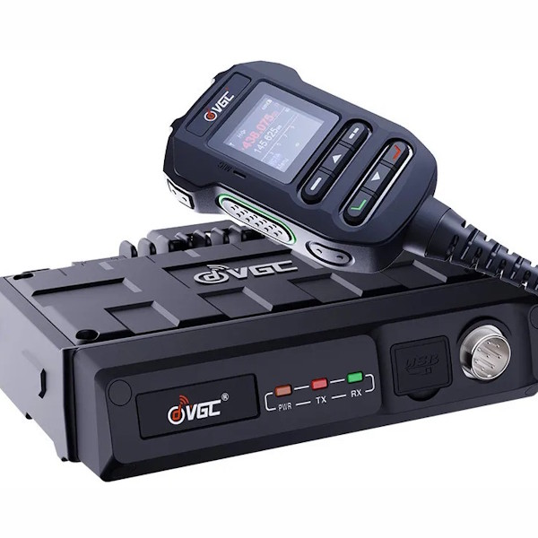
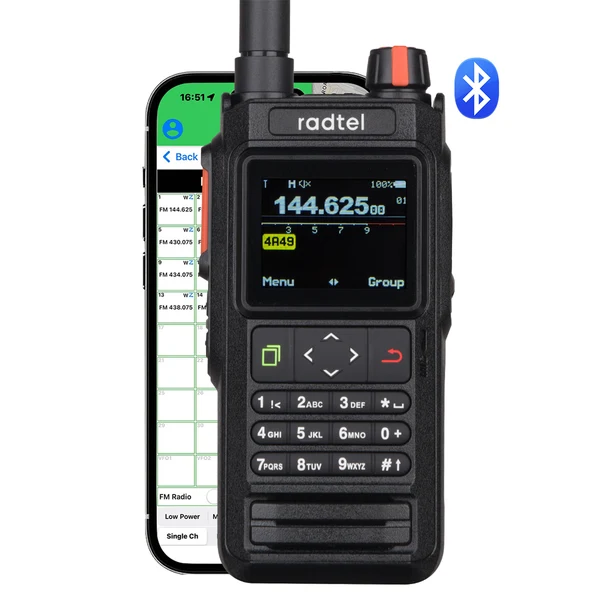

HTCommander talks to a family of Bluetooth-connected handheld and mobile radios built on the Benshi platform. If you own one of the radios below, you can program channels, run APRS and Winlink, send packets and more — from Windows, macOS, Linux, iOS, Android or the web. An amateur radio license is required to transmit.
The flagship of the family and the radio most of HTCommander is built around. A rugged IP67 dual-band VHF/UHF handheld with onboard GPS and APRS, up to 7 W output, a removable 2600 mAh battery with USB-C charging, NOAA weather alerts and 108–136 MHz AM airband receive. It carries 180 channels across six banks and exposes a KISS TNC over Bluetooth, so HTCommander can move data without a separate cable or modem.

The mobile counterpart to the UV-PRO: a 50 W dual-band VHF/UHF transceiver with Bluetooth app programming, GPS and APRS, AI noise reduction, satellite-tracking tools and a built-in KISS TNC. It brings the same connected workflow to the vehicle or base station.

A 5 W dual-band handheld with wideband air-band receive, onboard GPS and APRS, Bluetooth programming and an IP67-rated body. A 2600 mAh battery charges over USB-C, and HTCommander handles the channel programming and messaging over the Bluetooth link.

A compact 50 W dual-band mobile with a detachable control head for tight installs. Bluetooth app control, GPS and APRS make it a natural fit for HTCommander when you want more power than a handheld can deliver.

An earlier model in the VGC N-series: a dual-band VHF/UHF handheld with smartphone app control over Bluetooth. HTCommander connects to it the same way it does the rest of the family.

A dual-band VHF/UHF handheld with a colour display, full keypad, Bluetooth app control, GPS and APRS. One of the most popular radios in the VGC line and fully supported by HTCommander.

A 50 W dual-band mobile transceiver with Bluetooth app programming and APRS. It pairs with HTCommander over Bluetooth for channel programming, messaging and packet work from the driver's seat.

The current VGC 50 W dual-band mobile, with app programming, Bluetooth and APRS built in. HTCommander drives its channels and messaging just like the handhelds.

A dual-band handheld with 256 channels and Bluetooth connectivity. It joins the Benshi-platform family that HTCommander speaks to, so you can program and message it straight from the app.

You don't always need a physical radio. HTCommander also connects to EchoLink, letting you get on the air over the Internet — a handy option when you're away from your handheld or out of RF range.
Read about EchoLink support →Radio not on the list? The project is actively adding hardware — check the source or open an issue on GitHub.
Download HTCommander View on GitHub →